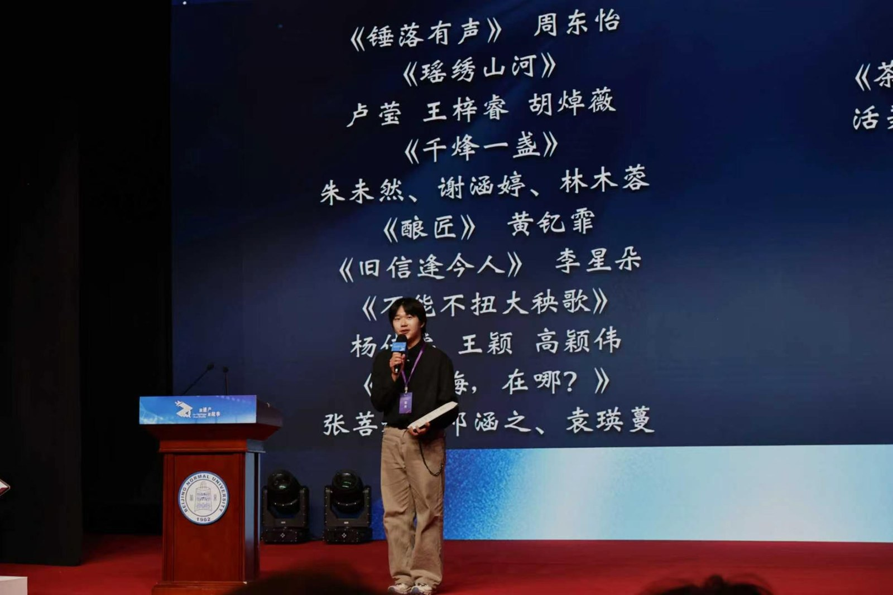
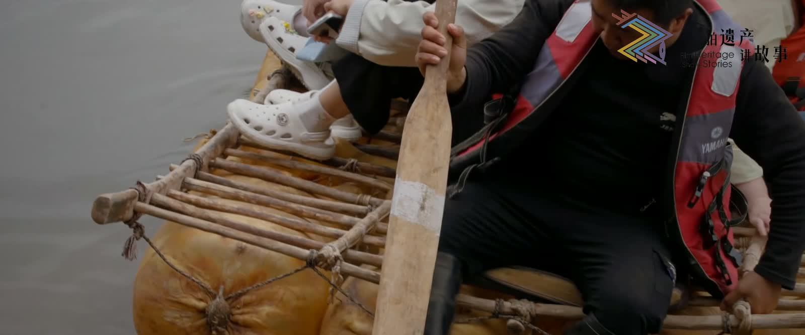
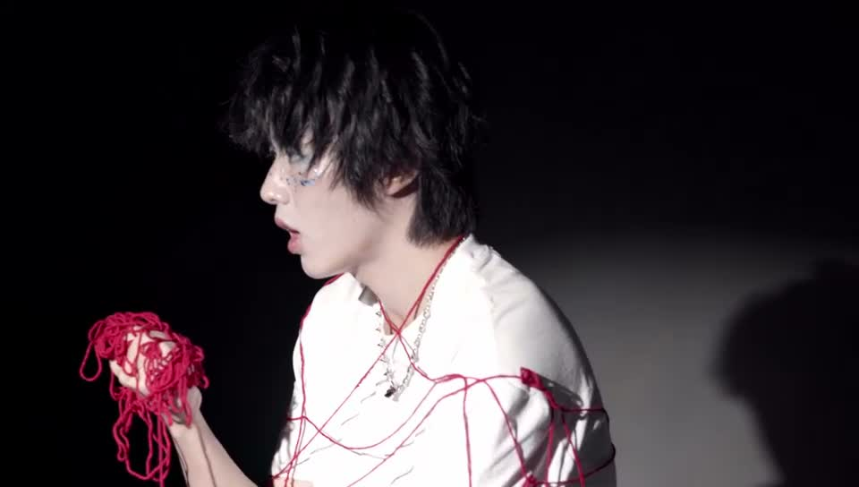

你好，我是和平。HELLO, I'M SAMUEL.

ON STAGE / 2026● LIVE MOMENT
FILM STUDENT / DIRECTOR / CINEMATOGRAPHER / EDITOR
把片段，
組成故事。▌
我是陳和平。
在導演、攝影與剪輯之間，探索影像的可能。
02 FILMS / 03 MOMENTS / 01 RECOGNITION選一個入口，開始觀看 ↗
作品素材庫

革船混剪片段 / 00:01:00
NO GRAVITY大一期末作業 / 00:02:43全部作品 · 2 部
革船 / 混剪片段1920 × 1080 SOURCE
CONTACT SHEET / 點擊查看原圖
陳和平 / FILM STUDENT
SAMUEL
–CHEN↗
ABOUT ME
故事的開始，
也可以是一次對話。
電影系學生，以導演、攝影與剪輯為創作方向。
這裡保存我的作品、獲獎與活動紀錄。
歡迎交流影像創作、實習與工作機會。
hepingc277@gmail.com ↗